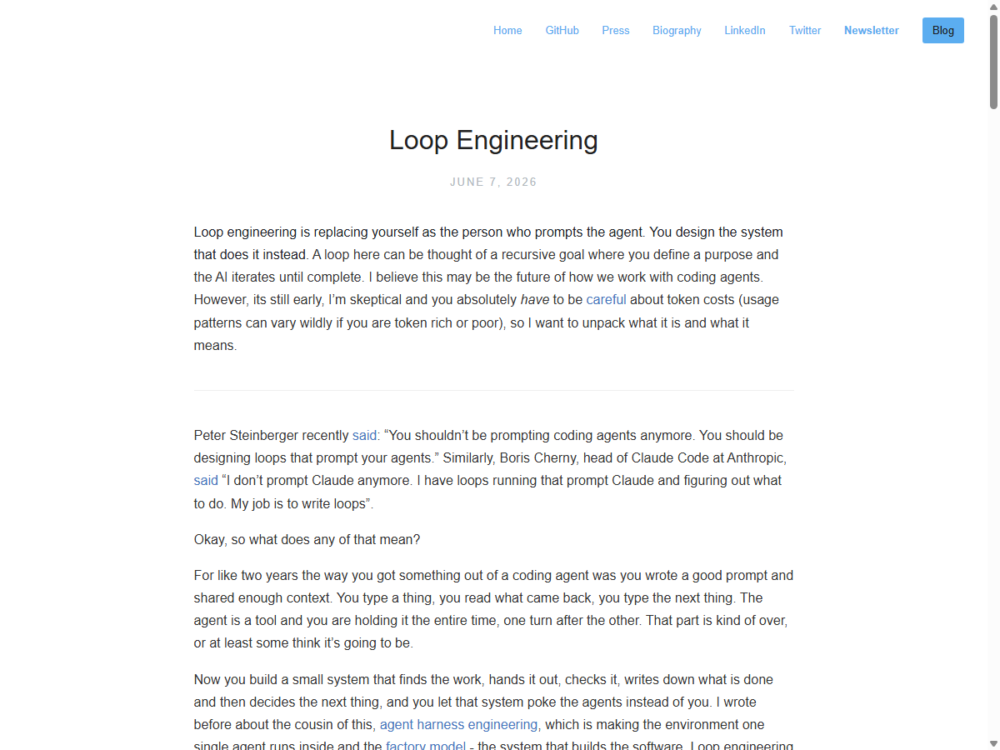
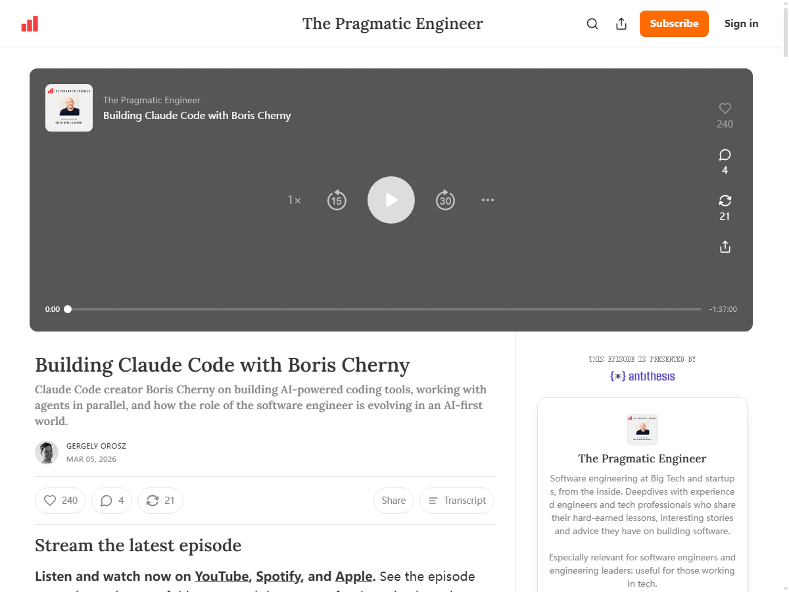
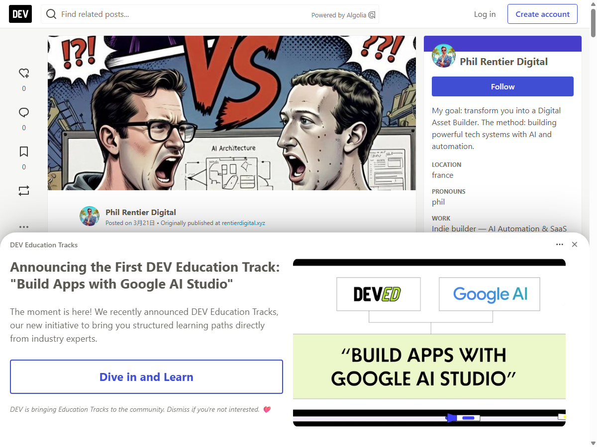
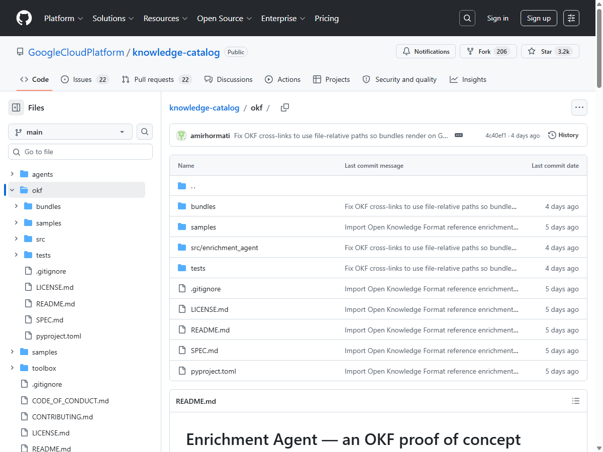
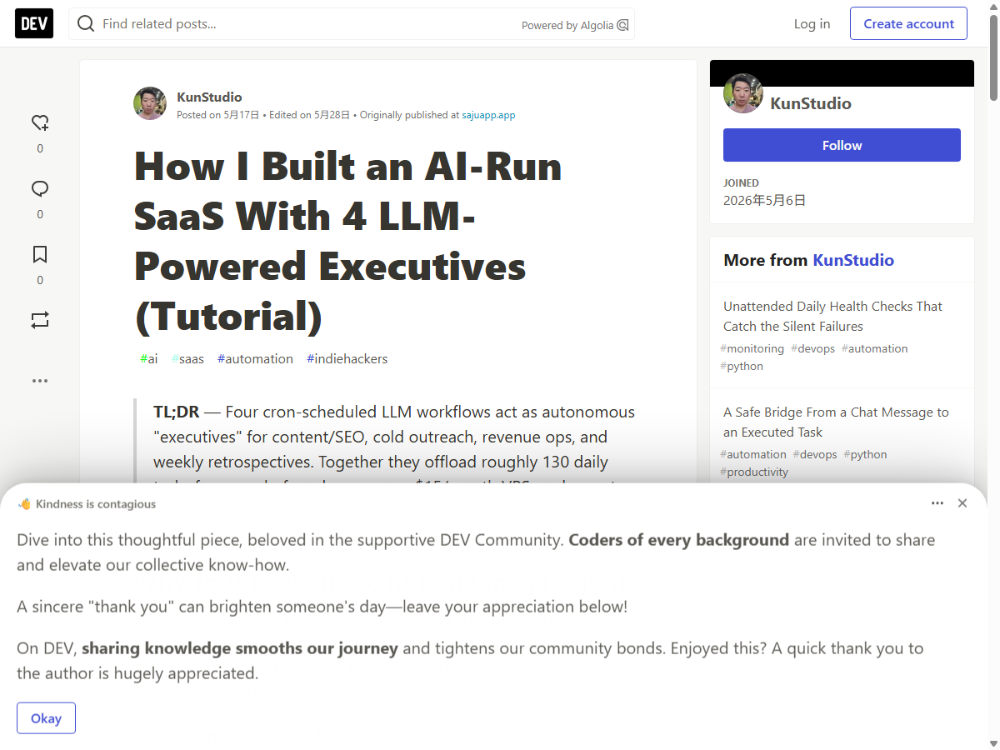
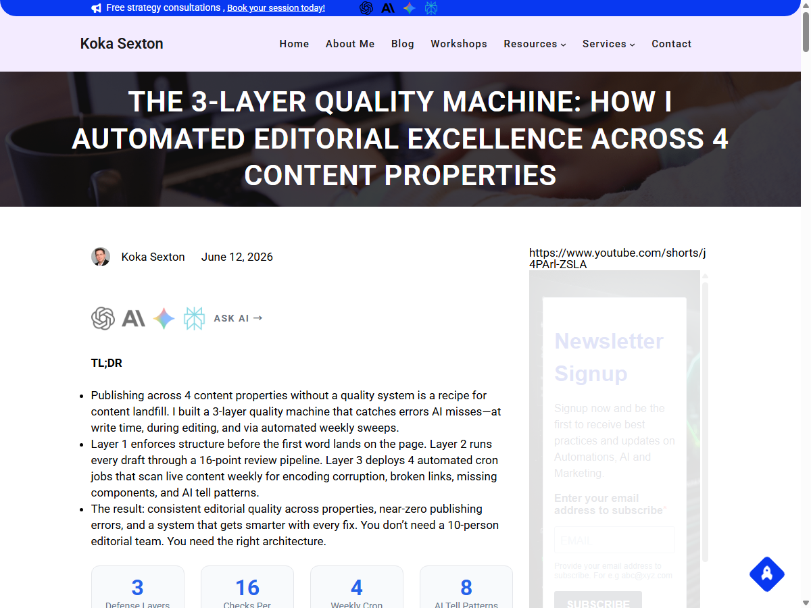

0. 参考案例
理解 Loop Engineering 的上下文。两层：理论基石 → 实战验证。带着本地约束去看案例，但约束清单本身属于下一章（现状分析）。
七案例，六决策
分析了 4 个理论框架 + 3 个实战系统后形成的设计决策——不是"看到了什么"，是"决定了什么"。
- 反馈环思维——设计让 AI 去 prompt AI 的环，不做一次性指令（Osmani + Boris + Steinberger）
- 失败必须可见——所有 loop 有可观测输出，禁止静默失败（全部案例的共同底线）
- 文件通信、Agent 不互调——KUN ./state/*.json + OKF Markdown+YAML + Steinberger VISION.md
- 对错可判交机器，判断留给人——Boris Underfund + Koka L1→L2→L3 质检模型
- 先跑通最简单的，再复制模式——wulixfr 第一天 1 个 Agent + KUN 4 Agent 独立运行
- $5 审批线——KUN Studio 成本护栏，用约束驱动自动化而非堆资源
- 数百并行实例（Boris）——单机 + DeepSeek 按 token 付费，跑不起
- Linux cron + VPS（KUN）——Windows schtasks 是既定环境
- Gemini 免费层（wulixfr）——模型策略不同，用 DeepSeek / aigoapi
- 链式 Agent 路由（Steinberger）——单机过度工程，直接调比多层路由简单
- Worktrees（Osmani）——六原语裁一，单机 git worktree 多余
- 纯文本质检（Koka）——需覆盖代码 + 数据 + 配置，维度更广
- Google Cloud 托管（OKF）——本地文件系统 + git 完全够用
- 反馈环思维 → 五宫位模型（§3 方案选型）
- Koka 三层 + Boris 对错可判 → inspector 质检组件（§4 详细设计）
- KUN $5 审批线 → 成本护栏（§4.4 计费）
- OKF Markdown+YAML → 文件知识库（handbook/）
- wulixfr "第一天跑通" → loop-init 技能（§5 分阶段施工）
- 全部案例共识 → 禁止静默失败写入宪法红线
0.1 理论基石
四位定义了 Loop Engineering 的理论框架。每位的贡献不同，批评也不同。调研方法：读原文 → 搜社区反馈（知乎/HN/Reddit）→ 提取对我们的意义。
展开 4 个理论框架分析
核心论点：人从"写 prompt 的人"变成"设计系统的人"。Loop = Automations + Worktrees + Skills + Connectors + Sub-agents + State/Memory。关键是设计反馈环，不是写一次性指令。
六原语 → 五宫位：Osmani 定义 6 个原语，本架构裁掉 Worktrees（单机 git worktree 多余），保留 5 个：
→ 闹钟 · 定时触发
→ 工位 · 执行技能
→ 电话线 · 外部连接
→ 子代理 · 委派子任务
→ 记事本 · 状态记忆
两个关键警告：
comprehension debt（认知负债）——loop 跑得越快，人对代码的理解差距越大。"如果代码库 30% 从未被仔细审阅过，loop 会让这个数字线性增长。"
cognitive surrender（认知投降）——人放弃思考，loop 输出什么就接受啦。"两个开发者建同样的 loop 可能得到相反结果——一个加速理解，一个逃避理解。"

社区批评
"旧酒新瓶"——Automations=cron(1975)、Worktrees=git worktree(2015)、Maker-Checker=四眼原则(几十年前)。知乎高赞："AI 圈子请停止每天发明新术语。Prompt Engineering→Context Engineering→Harness Engineering→Loop Engineering，两年四个'范式'。多少旧酒能装多少新瓶？"
Token(令牌) 成本爆炸——loop 模式消耗 3-8× token。有人评论："token(令牌) 富人用 while 循环，token(令牌) 穷人用 for 循环。"普通 $20/月用户根本跑不起。
调试噩梦——47 轮 loop 失败后怎么定位？没有成熟的 loop 可观测性方案。"'完成了'仍然是一句声称，不是证据。"
不借鉴 六原语全落地 → 只需 5 个（工位已由 Claude Code 原生覆盖，Worktrees 对单机多余）。Google Cloud 的 ASR 系统案例：花了 3 个月调试一个
CI=true 环境变量——我们不需要那个复杂度。
你雇了一个实习生帮你写代码，每次你交代完就不管了，过一会儿回来看结果。但你发现他可能写歪了、写错了，或者偷偷把你的意思改了——你自己也越来越不理解自己的代码了。Loop Engineering 就是给这个实习生装一套"工作流程"：几点开工、查哪些资料、写完怎么自查、做完通知谁。你从"盯一个人干活"变成"设计一条流水线"。关键警告：如果流水线跑太快，你连产品都不认识了——这就是 comprehension debt。更可怕的是，你开始什么都信流水线的——这就是 cognitive surrender。
核心论点："我不再直接 prompt Claude 了。我写 loop，让 loop 去 prompt Claude。我的工作是写 loop。"——同时跑数百个并行(同时运行) Claude 实例，读 GitHub issues、扫 Twitter(推特) 反馈、爬 Slack(办公通讯)，自动发现下一步要构建什么。Claude Code 现在 100% 由 Claude Code 自己写。目前 4% 的 GitHub 公开提交来自 Claude Code，2026 年底预计超 20%。
Underfund Principle（缺钱原则）：故意只给项目一半人手——人不够就会被迫自动化。"对错可判的任务（可验证对错的任务）交给机器，人只留在需要判断力（主观判断）的节点。"

社区反馈
X 上 70 万次观看。两极分化：一部分人兴奋"这是 AI 编程的未来"，另一部分批评"97% 的人没有数百个并行实例的预算"。Reddit 讨论聚焦：Underfund Principle 在生产环境是否安全？"如果两个工程师的代码没人 review，loop 放大的是质量还是 bug？"
社区普遍认同一个点：对错可判的任务才适合自动化。类型检查、测试通过、lint 零错误——这些机器能判。但"这个设计好用吗"、"这个文案读起来对吗"——仍然需要人。
不借鉴 数百并行实例——单机跑不起，token 账单受不了。Boris 在 Anthropic 内部有无限额度，我们按 token(令牌) 付费。
你手下有个工程师团队，活儿多到做不完。与其再加 10 个人，不如只给 2 个——逼他们写自动化脚本。判断对错的事情（测试过了没有、代码格式对不对）交给脚本去判，人盯着需要审美和判断力的事。Cherny 更极端：他连 IDE（代码编辑器）都卸载了，只写"环"（循环流程）——让环去决定什么时候跑 Claude、跑什么、跑完怎么判。数百个 Claude 同时跑，他不看每一个输出——环替他看。换个你可以想象的比喻：工厂质检员不自己检测产品，他设计检测机器，机器来测，他只抽检异常品。
核心论点："你不应该再给 coding agent 写 prompt 了。你应该设计 loop，让 loop 去 prompt 你的 agent。"X 上 150 万+ 次观看。他维护了一个每 5 分钟唤醒的 loop，把维护任务队列交给 OpenAI Codex，通过自定义 skills 路由工作——部分全自动落地，高风险改动浮到人工 review。
Compound operations（复利操作）：prompt（提示词）是单次操作，loop（循环）是复利操作——每次重复更便宜、更快、更好。一个 loop 管多个 agent（智能体），不是一对一。"I have my claw supervising my codex'es."

社区反馈
X 上评论两极：39% 支持、61% 批评。主要批评点：(1) Token 成本——有人算了一笔账，5 分钟一个 loop 一个月烧几千刀；(2) "你是在开源维护吗？那还好。但在公司里？老板看到 loop 烧钱第一个砍掉。"
Steinberger 的回应："你的时间真的不值那么多钱吗？"——但这被认为是一种精英视角。他还提到了 VISION.md 作为 loop 的反馈机制——loop 跑完对着 VISION 检查自己是否偏离目标。
被普遍认可的一点：loop 不应该静默失败。Steinberger 的所有 loop 都有可见输出——要么落地代码，要么浮出 review 请求。
不借鉴 Supervisor→planner→coder→reviewer→tester 链式路由——单机过度工程。直接调比多 agent 路由更简单，参见方案选型 §3 的"薄工具架"决策。
你开了 5 家连锁店，不会一家家亲自巡店——你雇了一个巡店经理，每 5 分钟打电话给每家店问情况。经理有本操作手册（skills）：进货怎么验、陈列怎么摆、投诉怎么处理。日常问题经理直接处理，只有高风险决策（比如退一大笔钱）才打电话问你。关键是：每次巡店都是在上次基础上做的——上回发现的问题这次重点查。这跟 prompt 完全不同：prompt 是你亲自去每家店、每次都得从头交代；loop 是你设计了"每 5 分钟查一遍"的制度，制度越跑越聪明。
核心论点：知识 = 带 YAML frontmatter 的 Markdown(标记文档) 文件目录——对人机同等友好。1 个概念 = 1 个 .md(标记文档) 文件，文件路径即概念 ID。三原则：最小约束（只有 type 是必填）、生产者/消费者独立（人写、LLM 生成、DB 导出都能被不同工具读）、格式不是平台（不需要 SDK、不需要 runtime、不需要账号）。
不依赖任何云服务。diffable（可差异比较）、git-friendly（版本控制友好）、可 PR review（PR审查）、可 CI gate（CI门禁）。Agent（智能体）读写苦力，人策展。

社区批评（Hacker News / Reddit）
"就这？Markdown + YAML 需要 15KB 规范？"——HN 高赞评论。团队早就在用 CLAUDE.md、AGENTS.md、Obsidian vaults 做同样的事，OKF 只是给了一个名字和最小规则。
Markdown 不是最佳格式——嵌套表格渲染差、布局/视觉语义无法捕获。如果目标消费者是 AI，为什么选一个为人类可读性优化的格式？
RDF/OWL 语义网的幽灵——"RDF/OWL 格式——我每十年重温一次。总有一天会成功的！（剧透：不会的。）"
但支持者认为：简单就是它的力量。Markdown+YAML 是人机互通的最大公约数。Karpathy 的 "LLM Wiki" 模式、AGENTS.md、Obsidian——大家都在做，OKF 只是给了规范名。
不借鉴 Google Cloud 的发布/托管/推广流程。OKF 是 Google 内部需求驱动（BigQuery 表文档化），我们的规模不需要知识库平台。本地文件系统 + git 足够。
--- 包裹的元数据块，人和机器都能解析。 diffable = 文件格式支持 git diff 逐行比较，便于版本控制和 PR review。
你家有几百本书、几十本相册、几十份合同——散落在各个抽屉和硬盘里。你老婆找东西靠吼："那个保险单在哪？" 你靠记忆："应该在书房第二个抽屉。" OKF 说：别这样。每样东西就是一个文件，文件名就是它是什么，文件开头几行写清楚标签——就跟图书馆一样，书架编号 = 文件夹路径，索引卡片 = YAML frontmatter（YAML前置元数据）。任何人（或任何AI）走进来，都能找到。不需要装 App、不需要注册账号、不需要联网。Google 把它写成标准，但说白了：就是写 Markdown（标记文档）文件，加个标签，放文件夹里。
0.2 实战参考
三位在真实约束下跑了 6 个月以上的系统。他们的教训比理论家的建议更重。调研方法同上：读原文 → 搜社区讨论 → 提取可落地的部分。
展开 3 个实战系统分析
核心架构：4 个 cron(定时任务) Agent(智能体) 各司其职——Research、Writer、Editor、Publisher。Agent 之间不互相调用，通过 ./state/*.json 共享数据。$5 审批线：任何操作预估成本超 $5 必须 Telegram 人工确认。"The day you add an interactive prompt（交互式确认） is the day automation dies（自动化死的那天）."
关键数据：130 项/天处理量、6 个月零人工干预稳定运行、$15/月 VPS 总成本。证明了低成本高吞吐的 Agent 系统可行。

社区反馈
dev.to 社区好评为主，但有两个质疑：(1) 单一 VPS = 单点故障——$15/月的机器挂了整个 SaaS 停摆，作者承认"目前没有冗余"；(2) $5 审批线太粗——按项目维度累计还是按操作？Research agent 如果每次搜索都低于 $5 但累计 200 次，总成本可能远超预期。
社区最赞赏的点：Agent 不互调——避免了链式调用的级联故障。一个 Agent 挂了不影响其他三个，各自从 state JSON 读最新数据就行。
不借鉴 Linux VPS + cron——我们是 Windows 单机 schtasks + agentboard scheduler。部署环境不同导致调度/权限/进程管理完全不同。4 Agent 角色（Research/Writer/Editor/Publisher）是 SaaS 特定分工，不适合我们的通用 loop 架构。
你开了 4 个员工各管一摊：采购、文案、美工、发货。关键设计：他们之间不聊天、不开会、不互相派活。怎么协作？门口有个共享黑板（./state/*.json（状态JSON文件）），每人做完更新黑板。采购员看到黑板上"文案好了"就去下单。还有个硬规矩：谁要花超 5 块钱，必须给你打电话确认。为什么不能互相派活？因为一旦采购给美工派活，责任就乱了——采购派错了、美工照做了、你不查就没人知道。每人自己管自己，责任清清楚楚。
L1 写前护栏：结构化内容简报在写作前强制执行——字数下限、2-4 个设计元素/篇、内部链接目标、8 种 AI 腔检测（"delve into"、"unleash"、"in today's fast-paced..." 等机械套话）。写之前就拦住，不是写完再改。
L2 编辑管线：Revise→Edit→Proofread 三阶段 + 16 点检查清单（禁词扫描、外链自动插入、编码验证、无障碍检查、SEO(搜索引擎优化) 验证）。
L3 周度扫查：4 个 cron job 每周跨 4 个资产扫查——编码损坏、死链/缺组件、旧内容 AI 腔、设计元素最低数量。
闭环机制：L3 扫到的每一个错误反馈回 L1/L2 更新检查规则——系统持续学习，越跑越聪明。

社区反馈与局限
文章在内容营销圈反响积极，但观察到的局限：(1) 纯文本质检——16 项检查全部针对文字内容，不覆盖代码质量、数据完整性、系统配置；(2) 人工校准阶段——L1 的 AI 腔检测需要人工标注大量样本训练，作者承认前两周是"半自动"的；(3) 跨资产差异——4 个内容资产各有风格指南，L1 规则需要按资产分别配置。
不借鉴 纯文章质检维度→我们需要质检代码、数据、调度、配置——对象维度更多。16 项检查的具体内容（SEO、无障碍、编码验证）是为内容资产定制的，不能直接套用到 loop 架构文档。
你是一家杂志社主编，每天收到几十篇稿子。以前你亲自一篇篇审，嗓子审哑了。Koka 的办法是建三条防线：第一道——作者动笔前，系统自动发一份"写作规范"（最少几个词、至少配几张图、不准用哪类套话）。写之前就拦住，不是写完再骂。第二道——稿子交上来后三道工序：先改结构（Revise（修改结构））、再改措辞（Edit（编辑措辞））、最后挑错字（Proofread（校对挑错）），16 项检查清单。你只过最后一眼。第三道——每周日晚上，系统自动扫过去一周所有发出去的稿子，找漏网之鱼。找到的每一条错误，反馈回第一道和第二道，下周的规则就更严了。这就是"闭环"——不是越跑越松，是越跑越聪明。
核心架构：BaseAgent 五步骨架——load config → fetch → process → act → log。所有 9 个 Agent 继承这个基类。关键教训："先写骨架再造 Agent，第一天就跑通最简单那个。"不是设计完 9 个再动手，而是第一天让 1 个跑通，然后复制模式。
与我们最相关的：全免费层运营、Windows 原生、零服务器——和我们环境完全一致。用 Google Gemini 免费层 + Python（编程语言），月成本近乎零。证明了"免费层足够跑生产级 Agent（智能体）系统"。
社区反馈与局限
dev.to 社区最关注的是免费层的可持续性——Gemini 免费层有速率限制和配额，依赖免费 API 的系统在生产规模下可能突然断供。9 个 Agent 的类型没有详细展开，社区希望看到每个 Agent 的具体职责和失败处理。
但普遍认可："先跑通最简单的"是最被低估的工程实践。太多人设计 9 个 Agent 的完美架构，结果一个都没跑通。
不借鉴 Gemini 免费层——我们用 DeepSeek / aigoapi，模型策略不同，免费层限制也不同。Python 技术栈——Claude Code + Node.js 是我们的底座，不需要在工作站引入 Python。
你想开 9 家街边档口，不用每家从零装修。你设计了"标准档口模板"——一个集装箱板房，里面水电煤气接口都统一。第一家先卖烤肠，跑通就赚第一块钱。然后第二家卖炒粉，还是这个模板，只换菜单和调料。9 家都跑在免费场地上（零租金），用的是你本来就在用的电表和水管（Windows schtasks（Windows任务计划程序））。核心教训就一条：别一开始就设计 9 家店。第一天让 1 家赚到钱，后面 8 家复制就行了。太多人画了完美的 9 家店规划图，一家都没开出来。
1. 现状分析 · 系统体检
2026-06-17 实时采集。望闻问切——先看清"现在是什么"，再决定"应该改成什么"。
体检诊断 · 五改二守
七项发现不是展览——每项都必须落到一个决定。五条改，两条守。不是"看到了什么"，是"决定了修什么、不修什么"。
- 无声失败是系统性问题——stderr 不进文件 + 成功判定只看退出码 + tokens 硬编码 0。三缺陷叠加。这是 Phase 0 止血的第一刀
- 调度器三权分立——agentboard / OpenClaw / schtasks 三层共存，没有一处能回答"现在有哪些 cron 在跑"。统一收敛到 alarm/ 定义 + agentboard 执行
- 骨件无版本控制——~/.agentboard、~/.claude、~/.openclaw 全裸奔。ARCHITECTURE.html 改坏了只能靠记忆恢复。Phase 1 补 git
- 19 项目散乱 + 无健康评分——workspace 13 个 + 根目录 6 个，边界模糊。所有项目无量化的健康指标，靠人工发现故障。Phase 2 标准化
- 骨件管理权分散——三目录各自独立，宪法/技能/memory/cron 分散三处。一个统一的骨件管理入口比分别治理更可持续
- Windows schtasks 不拆——agentboard scheduler 是首选路径，但 schtasks 作为兜底保留。不是所有 cron 都要迁移，先统一可见性再谈统一执行
- 项目目录不强制大搬家——D:\HHH\自媒体\ 和 D:\workspace\lab\ 历史路径不动。新项目按 YYYY-MM-DD-项目名 落盘，旧项目通过 health.json 被自动发现即可
- 工具架已成型——agentboard :3099 有 38 个工具注册，API 合约稳定，conflicts + agent_notes 协议存在。基座已在，只加标准接入层，不动骨架
- 技术栈统一——Node.js + PowerShell + Claude Code CLI，DeepSeek 单一供应商。统一 = 运维成本低。不允许引入新语言/新运行时打破这条
有战斗力的民兵单位——武器（38 工具）弹药（DeepSeek）阵地（19 项目）齐全，但没有指挥链：谁开火不知道、打没打中不知道、弹药消耗不知道、枪卡壳了没人听见。改造方向不是换武器，是建立可见性 + 自检 + 告警三层指挥链。承重墙（工具架 API、health.json schema、Vortex 代理）不拆，在上面架天线。
所有后续设计都受以下五条约束——它们是给定的，不是可选的：
- 单机 Windows——不引入分布式架构，不依赖 Linux 假设
- 零外部服务依赖——agentboard 停了，项目照跑；API 挂了，数据还在
- DeepSeek 按 token 付费——不是 Anthropic 内部无限额度，每次调用都计费
- 文件 > API——agent 之间用文件通信，不走 HTTP
- Claude Code 是工位——不自己造 agent 运行时，用现有 CLI 能力
展开系统体检详情（硬件 · 磁盘 · 软件 · 端口 · 外部依赖 · 痛点 · 承重墙）
1.1 硬件规格
| 项目 | 规格 |
|---|---|
| CPU | Intel Core Ultra 7 265KF · 20 核 20 线程 |
| 内存 | 31.7 GB |
| 操作系统 | Windows 11 专业版 · 10.0.22631 · 安装于 2026-01-14 |
| 最后重启 | 2026-06-16 08:00 · 运行 1 天 |
| GPU | 未检测到 NVIDIA 独立显卡 · 无 CUDA |
1.2 磁盘布局
| 盘符 | 标签 | 文件系统 | 总容量 | 已用 | 剩余 | 用途 | git |
|---|---|---|---|---|---|---|---|
| C: | 系统 | NTFS | 1.0 TB | 516 GB (50%) | 508 GB | Windows + 骨件（~/.agentboard, ~/.claude, ~/.openclaw） | 骨件无 git |
| D: | 软件 | NTFS | 883 GB | 319 GB (36%) | 564 GB | 所有项目工作目录 + 软件安装 | 按项目 |
| F: | WD | NTFS | 932 GB | 478 GB (51%) | 453 GB | 备份 + 大文件存储 | 待确认 |
C 盘崩溃 = 骨件全丢，恢复靠记忆。这是 SWOT 里的 T1 威胁。
1.3 软件环境
| 组件 | 版本 | 备注 |
|---|---|---|
| Node.js | v24.13.0 | agentboard + Claude Code 运行时 |
| npm | 11.6.2 | |
| Python | 3.14.2 | 社媒抓取 (:3095) + lab 脚本 |
| Git | 2.52.0 | |
| Claude Code CLI | 2.1.126 | 工位主引擎 |
| Ollama | :11434 运行中 | 本地模型（未在 loop 中使用） |
| 网络代理 | Vortex · :7897 | HTTPS_PROXY 已设置，CLI 联网走代理 |
1.4 项目清单
D:\workspace\ 下 19 个项目目录。按 Loop Engineering 标准衡量：
| 项目 | git | 远程 | CLAUDE.md | health.json | 文件数 | 最后活动 | 状态 |
|---|---|---|---|---|---|---|---|
| 2026-06-15-loop-engine | ✓ | 无 | ✓ | ✓ | 45 | 2026-06-17 | 活跃 |
| evopearl-data | ✓ | GitHub | ✓ | ✓ | 36 | 2026-06-17 | 唯一有 cron 链路 |
| 2026-06-14-社媒数据抓取 | ✓ | 无 | ✓ | ✗ | 3,515 | 2026-06-17 | 活跃 · :3095 |
| 2026-06-06-版式画廊部署 | ✓ | 无 | ✓ | ✗ | 730 | 2026-06-12 | 待推公网 |
| 2026-05-31-税无忧 | ✓ | 无 | ✓ | ✗ | 908 | 2026-06-12 | 休眠 |
| 2026-05-20-概念短片工作室 | ✓ | 无 | ✓ | ✗ | 4,501 | 2026-06-12 | 休眠 |
| 2026-05-29-深圳保障房导航 | ✓ | 无 | ✓ | ✗ | 15 | 2026-06-12 | 休眠 |
| 2026-05-27-日语发音学习 | ✓ | 无 | ✓ | ✗ | 7 | 2026-06-12 | 休眠 |
| forma-typesetting | ✓ | GitHub | ✓ | ✗ | 123,258 | 2026-06-16 | ⚠ 137 文件未提交 |
| html-video | ✓ | GitHub | ✓ | ✗ | 33,857 | 2026-06-12 | 休眠 |
| huashu-design | ✓ | GitHub | ✓ | ✗ | 169 | 2026-06-12 | 休眠 |
| gulubuy | ✓ | GitHub | ✓ | ✗ | 2,265 | 2026-06-12 | 休眠 |
| browser-use | ✓ | GitHub | ✓ | ✗ | 21,637 | 2026-06-12 | 第三方 · 只读 |
| cosyvoice3 | ✓ | GitHub | ✓ | ✗ | 338 | 2026-06-12 | 第三方 · 只读 |
| 2026-06-15-aion-kit | ✗ | — | ✗ | ✗ | 19 | 2026-06-15 | 空壳 |
| lab | ✗ | — | ✗ | ✗ | 42,897 | 2026-06-17 | 实验场 |
| _archive | ✗ | — | ✓ | ✗ | 24,939 | 2026-06-16 | 归档 |
| _runtime | ✗ | — | ✗ | ✗ | 1,563 | 2026-06-16 | 临时运行时 |
| _templates | ✗ | — | ✓ | ✗ | 1 | 2026-06-04 | 模板 |
只有 loop-engine 和 evopearl-data 两个项目具备完整 Loop Engineering 骨架（CLAUDE.md + health.json）。
1.5 端口与服务
当前监听端口，按与 loop 架构相关度筛选：
| 端口 | 进程 | 角色 | 与 loop 关系 |
|---|---|---|---|
| :3099 | node · agentboard | 工具架 API + 面板 | 核心依赖 · W2 承重墙 |
| :3095 | python · xhs-scraper | 社媒数据采集 | 数据源 · 应纳入 cron 链路 |
| :3737 | node | agentboard 内部通信 | 内部 |
| :3738 | node | agentboard 内部通信 | 内部 |
| :7897 | Vortex | 网络代理 | 所有 CLI 联网必经 |
| :11434 | ollama | 本地 LLM | 未使用 |
| :8080 | python | 未知 web 服务 | 待确认 |
| :8099 | python | 未知 web 服务 | 待确认 |
| :44950 | figma_agent | Figma MCP | 设计工具链 |
| :27015 | AppleMobileDevice | iOS 服务 | 无关 |
| :35600 | ToDesk | 远程桌面 | 无关 |
1.6 调度器现状
三套调度系统共存，职责重叠。这是改造的核心目标——统一为独立的本项目调度。
| 调度器 | 位置 | 当前职责 | 状态 |
|---|---|---|---|
| agentboard scheduler | ~/.agentboard/cron/scheduler.js |
常驻 Node 进程 · 从 agentboard API 拉取 cron 任务列表 · 按 cron 表达式触发 · 调 Claude Code CLI 执行 | 运行中 · token 追踪未启用 · 依赖 agentboard 存活 |
| OpenClaw gateway | ~/.openclaw/cron/jobs.json |
4 个 cron job（进化猫 × 3 + 个体户 × 1）· 远程 gateway 触发 · 独立 session 执行 | 3 启用 1 禁用 · 依赖 gateway 存活 |
| Windows schtasks | cron-runner 任务 |
系统级定时触发 · 1 个 loop 相关任务 | 系统原生 · 不依赖任何服务 |
目标：全部迁移到 Windows schtasks + 项目内 crontab.txt，实现零外部依赖。
1.7 外部依赖与密钥
| 依赖 | 用途 | 状态 | 计费模型 | 风险 |
|---|---|---|---|---|
| DeepSeek API | 主推理引擎 · deepseek-v4-pro | 已配置 | 按 token | 余额不足 = 所有 loop 停 |
| aigoapi | 生图/语音/视频生成 | 已配置 | 按张/按秒 | 计费模型与文本不同 · §4.4 展开 |
| Vortex 代理 | 所有 CLI 联网 | 运行中 · :7897 | 订阅制 | 代理挂了 = 无网络 = 全停 |
| 飞书 API | 通知推送 · 卡牌消息 · 多维表格 | 已配置但无 webhook | 免费 | 提报链路依赖飞书 · 飞书挂了通知不到人 |
| Coze API | 小红书工作流 | token 2026-07-14 过期 | 按调用 | 过期后小红书自动化停 |
| Ollama | 本地模型 | 运行中但未用于 loop | 免费 | 备用方案 · 性能不如云端 API |
1.8 本地约束
这些是已经存在的代码和决策，设计必须兼容。我们是带着这些约束去找参考案例、评估什么能借鉴什么不能借鉴的。
~/.claude/CLAUDE.md人写：文件管理原则.txt~/.agentboard/ · :3099 · 38 工具D:\workspace\evopearl-data\ · 3 链式 cronD:\workspace\2026-06-14-社媒数据抓取\ · :3095~/.claude/skills/loop-audit/ · Phase 0→31.9 本机拓扑
AI 的五处落笔地：
| 路径 | 角色 | 骨/肉 | git |
|---|---|---|---|
D:\workspace\ | 所有项目的工作目录 | 肉 | 按项目 |
~\.agentboard\ | 工具架：服务、调度、面板 | 骨 | 无 |
~\.claude\ | 宪法、技能、memory | 骨 | 无 |
~\.openclaw\ | cron job 定义 + 提示词 | 骨 | 无 |
D:\HHH\自媒体\ | 进化猫自媒体（旧） | 肉 | ? |
D:\Obsidian\ | 独立知识库，自有同步 | 独立系统，不在此架构内 | |
1.10 数据流复盘 · evopearl-data
deep-read → ai-signal → daily-selection，链式触发（前一个成功才跑下一个）。每天北京时间 8:00/8:20/8:35 分别触发。产出 JSON 到
data/<task>/YYYY-MM-DD.json，push 后 Vercel 自动部署。
可能原因：gate 0 提前失败（API 不可用/余额不足/网络），但 run-task 未将 stderr 写入日志，导致无声。
根因：失败不可见。scheduler 报告 "success" 但实际是空跑。
1.11 痛点清单
1.12 SWOT
| S 优势 | W 劣势 |
|---|---|
|
agentboard 已有 38 工具注册 + scheduler 常驻 evopearl-data 已验证 cron 链可行 宪法已是唯一真相源，不需要再讨论原则 社媒抓取已有统一接口 (:3095) 硬件充裕：20 核 CPU + 32GB RAM + 2TB 磁盘 |
骨件（~/.agentboard, ~/.claude, ~/.openclaw）无 git 版本控制 备份只有口头原则，无脚本 旧项目散落 D 盘各处 日志/安全/恢复三机制全缺 scheduler token 提取是硬编码 0 12/19 项目缺少 health.json，agentboard 无法自动发现 双调度器共存，职责重叠，单点故障风险 |
| O 机会 | T 威胁 |
|
OKF 格式天然适合 agent 读写，可直接采用 薄工具架架构已验证，扩项目成本很低 Koka 三层质检可复用为 inspector 标准 Windows schtasks 原生可用，零外部依赖 20 核 CPU 支持高并行 loop |
C 盘崩溃骨件全丢，恢复靠记忆 工具架单点——停了所有 cron 全停 外部 API（生图等）计费模型不同，$5 审批线可能不适用 comprehension debt：loop 跑太快，理解跟不上 DeepSeek / aigoapi 任一欠费 → 对应 loop 全停 |
1.13 承重墙清单
这些不能动。改造方案可以在墙上粉刷、走线、开孔——但不能拆墙。开工前声明，施工中检查。
| # | 承重墙 | 为什么不能动 | 如果非要动 |
|---|---|---|---|
| W1 | 宪法红线 · ~/.claude/CLAUDE.md | 行为规则的唯一真相源。红线清单（删除/密钥/git push/全局安装/公开发布）锚定所有 agent 行为 | 先改宪法，再改代码。不先斩后奏 |
| W2 | agentboard :3099 API 合约 | 38 工具注册 + cron 调度 + 健康面板依赖此接口。断 = 全停 | 新版 API 兼容旧版跑 7 天，验证后再下线旧版 |
| W3 | notebook/health.json schema | agentboard 自动发现项目的唯一硬接口。字段名/类型 = 合约 | 加字段可以，改已有字段 = 破坏性变更 |
| W4 | ~/.openclaw/cron/jobs.json 格式 | OpenClaw gateway 调度源。改格式 = 所有 cron 停摆 | test job 先验，gateway 正常再全量切 |
| W5 | D:\workspace\ 根路径约定 | 所有项目、agentboard 扫描、备份脚本依赖此根 | 搬目录 = 全局路径重写，需全量回归 |
| W6 | Vortex :7897 代理 | 所有 CLI 工具联网唯一出口。关了 = Claude Code / npm / git push 全断 | 换代理方案需全量验证所有 CLI 联网路径 |
2. 设计目标
八条验收标准 · 一个硬选择
八条标准是闸门不是愿望清单——每条有可验证的通过条件。一个硬选择：G3（cron 日志不论成败）是前提，其他七条依赖它先成立。五条原则从失败模式反推，六条禁区施工中不讨论。
不是八条一起上——那是愿望清单。选了 G3（cron 日志不论成败）作前提条件。日志不可见 → 质检无从谈起 → 自愈不可信 → 独立运行是空话。其他 7 条标准都依赖 G3 先成立。这次只攻这一个方向，其余锦上添花。
- 骨肉物理隔离——骨件 C 盘，肉件 D 盘，复制即迁移
- 失败必须可见——6/17 教训，静默比报错危险
- 唯一真相源——数据在文件，服务是代理不是主人
- 薄工具架——定义在项目，执行在 agentboard
- 一次只改一个首要方向——这次攻失败可见，其余锦上添花
- SaaS 多用户面板
- Prometheus/Grafana 实时监控
- Docker / K8s 容器化
- 通用 AI 自动修 bug
- 替换 Obsidian
- 跨机器 agent 调度
G1-G8 每条都有"怎么验"列，但当前一条都没通过——G3（日志）0%、G4（回滚）无 git、G6（工具自发现）agent_notes 未落地。目标是验收标准，不是当前状态。Phase 0-3 施工的每一步验收都回到这个表。
展开验收标准详情（8 条成功标准 · 5 条设计原则 · 6 条 Non-Goals）
2.1 成功标准（可验证）
| # | 标准 | 怎么验 |
|---|---|---|
| G1 | kill agentboard，项目独立跑完 cron 任务 | Windows 任务计划 + crontab.txt 兜底，手动跑一遍 |
| G2 | 任意项目复制到新机器，能直接工作 | 项目自包含：CLAUDE.md + notebook/ + alarm/ 全在目录内 |
| G3 | 任何一次 cron 执行，不论成败，都有日志 | data/runtime-events.jsonl 有记录，包括 stderr |
| G4 | 任何一个文件操作失误，可以回滚 | git + F 盘备份 + 回收站机制 |
| G5 | 新项目接入 loop，不改 agentboard 一行代码 | 建 2 文件（CLAUDE.md + notebook/health.json），agentboard 自动发现 |
| G6 | 工具 AI 自动知道有什么工具、怎么调、什么冲突 | 读 /api/tools 返回 conflicts + agent_notes，AI 自觉看 |
| G7 | 跨会话任务不丢 | HANDOFF.md + memory 指针，新会话能接上 |
| G8 | 踩过的坑不踩第二遍 | agent_notes 写入工具 manifest，后续 AI 调前先读 |
2.1b 设计原则
从痛点、约束和参考案例中提炼。不是装饰——每条原则对应一个具体的失败模式。
2.2 非目标（明确不做）
| # | 不做的事 | 为什么 |
|---|---|---|
| N1 | 公网 SaaS 面板（多用户、登录） | 单机工具架。公网只读静态 deploy（如 evopearl-data Vercel） |
| N2 | 实时监控 / 告警 | 轮询 + 日报即可。不需要 Prometheus + Grafana |
| N3 | Docker / K8s | 单机 Windows，容器化成本 > 收益 |
| N4 | AI 自动修复任意错误 | 自愈只限已知模式（重启服务/清临时文件），不搞通用 AI 修 bug |
| N5 | 替换 Obsidian | Obsidian 独立运行，有自己的同步。loop engine 不碰它 |
| N6 | 跨机器 agent 调度 | 目前只有一台机器，先搞定单机 |
3. 方案选型
每个决策只比较两个真正可选的方案。不拿烂方案当靶子。
薄工具架 4/4 全胜 · 五组件各归其位
不是"哪个好"的偏好问题——是四个硬验证标准的直接比较。每个组件独立判断归属，不搞一刀切。
| 1. 杀 agentboard，项目能跑？ | 厚× 薄✓ |
| 2. 复制到新机直接工作？ | 厚× 薄✓ |
| 3. token 安全？ | 平手 |
| 4. 新项目接入改几处？ | 厚 3+ 薄 0 |
厚工具架 1/4，薄工具架 4/4。不是偏好，是验证结果。
- 闹钟 → 定义在项目 alarm/，执行在 agentboard
- 工位 → Claude Code 原生，不改
- 员工手册 → 项目 CLAUDE.md + handbook/
- 电话线 → token 在 agentboard，通道选择在项目 wire/
- 质检员+记事本 → 全在项目
不拿烂方案当靶子，不搞伪二选一。厚 vs 薄是真正的架构分叉——两个方案各有真正优势（厚=初期集中方便，薄=长期解耦可迁移）。选薄不是因为厚是错的，是因为四标准测试厚过不了。
展开方案选型详情（厚 vs 薄 · 五组件归属细则）
3.1 厚工具架 vs 薄工具架
这是整个架构的核心二选一。两方案都能跑，各有真正优势。
定义 + 执行都在 agentboard。项目只是被触发对象。
- 闹钟定义 → agentboard cron/tasks.json
- 员工手册 → agentboard skills/
- 电话线 → agentboard 全管
- 质检规则 → agentboard rules/
- 记事本 → agentboard state/
真正优势：
- 初期只要 1 个地方配，不用在多个项目间跳
- 全局看所有配置很方便——一个文件读完
- 质检跨项目对比天然集中
真正代价：
- 每加一个项目 agentboard 胖一圈
- 项目无法脱离 agentboard 运行
- 换机器 = 手动重建 agentboard 配置
定义在项目，执行在 agentboard。工具架只调度 + 聚合。
- 闹钟定义 → 项目 alarm/crontab.txt
- 员工手册 → 项目 CLAUDE.md + handbook/
- 电话线 → token 在 agentboard，规则在项目 wire/
- 质检规则 → 项目 inspector/checks.js
- 记事本 → 项目 notebook/health.json
真正优势：
- 项目自包含——复制文件夹即迁移
- agentboard 熄了，项目用 Windows 任务计划继续跑
- 配置随项目进 git，天然版本控制
- 项目越多优势越明显
真正代价：
- 前期多写几个文件（每个项目建 alarm/ + notebook/）
- 全局巡检需要扫描多个文件而非读一个文件
Karpathy 四标准判胜负
A：否（闹钟定义在 agentboard，停了就没了）
B：能（crontab.txt 在项目，Windows schtasks 兜底）
2. 项目复制到新机器能直接工作？
A：否（需手动重建 agentboard 配置）
B：能（项目自包含）
3. token 安全？
平手——两变体 token 都在 agentboard，不进项目仓库。
4. 新项目接入要改多少地方？
A：agentboard 改 3 处以上
B：项目内新建 2 文件，agentboard 零改动
A = 1/4，B = 4/4。变体 B 胜出。
3.2 五组件归属细则
整体架构选了 B，但每个组件单独判断。不是"全放项目"就对了。
| 组件 | 本质 | 决定 | 理由 |
|---|---|---|---|
| 🔔 闹钟 | 定时触发 | 定义在项目 alarm/，执行在 agentboard | 调度需常驻进程；规则属于项目 |
| 🏗 工位 | 隔离执行环境 | Claude Code 原生 git worktree | 不是我们的代码，直接用 |
| 📖 员工手册 | 项目知识 | 项目 CLAUDE.md + handbook/ | 项目知识属于项目 |
| 📞 电话线 | 外部通道 | token 在 agentboard，通道选择在项目 wire/ | 安全（token 不进仓库）+ 灵活（项目选通道） |
| 🔍 质检员 | 独立验证 | 项目 inspector/checks.js，agentboard 调度执行 | 不同项目不同标准。Koka 三层质检模型复用 |
| 📝 记事本 | 跨会话状态 | 项目 notebook/health.json + data/runtime-events.jsonl | "Agent forgets, the repo doesn't." 真相在磁盘 |
4. 详细设计
骨肉分离 · 四决三待定
不是"设计了什么"，是"定了什么、什么还没定"。六项已决形成架构骨架，三项待定阻塞施工推进。
- 骨件 C 盘 · 肉件 D 盘——物理隔离，复制即迁移。骨件三目录（~/.agentboard / ~/.claude / ~/.openclaw）是基座，肉件（D:\workspace\）自包含
- 唯一硬接口 health.json——status + score + tasks + meta 四个字段。agentboard 扫描发现项目，不关心项目怎么跑
- 三层备份——L1 git push（代码）→ GitHub，L2 robocopy（骨件）→ F 盘每日，L3 百度云盘（配置）→ 每周。三种灾难场景都有恢复 SOP
- 外部 API 四护栏——密钥隔离、¥5 审批线、频率上限、按计费类型分别防护
- 肉件目录结构标准化——CLAUDE.md + health.json 必须，alarm/inspector/escalation 建议，wire/handbook/workstation 可选
- 运行时进程隔离——agentboard（含 cron scheduler/runner）跑在独立 Node.js 进程，不寄生 Claude Code session。agentboard v1 崩溃已验证：寄生架构中宿主崩了寄生者跟着崩，换成任何存储介质都救不了。正确修复是进程隔离，不是换存储。教训：运行时状态和持久化数据必须分离
- P0 审批线硬阻断 vs 软提醒 —— 阻塞 §4.4 计费护栏落地
- P0 计费阈值 ¥5/次 vs 累计 ¥5/天 —— 阻塞审批线数值设定
- P1 骨件 git 策略 —— 全 git vs 子目录 git vs 纯 robocopy。阻塞 Phase 1 备份施工
- 骨肉分离 → Phase 0（删错误目录）+ Phase 1（补 git + 备份脚本）
- health.json → Phase 2（项目模板生成器 + agentboard 自动扫描）
- 三层备份 → Phase 1（robocopy 脚本 + GitHub push 验证）
- 四护栏 → Phase 3（审批流 + 频率上限执行检查）
- 三待定 → 第 6 章决策记录跟踪，Phase 1 前必须关闭 P0
- 进程隔离 → Phase 0（已满足——agentboard 是独立进程），但需在架构文档显式声明为设计约束
展开详细设计详情（骨肉隔离 · 接口契约 · 项目骨架 · API 调用 · 备份体系）
4.1 骨肉物理隔离
agentboard（工具架 · 骨）
workspace（项目区 · 肉）
4.2 接口契约
agentboard 不关心项目怎么跑、用什么跑，只关心：你健康吗？
4.3 项目骨架
最少可接入 loop 体系的项目模板。只有前两个是必须的。
| 优先级 | 文件 | 作用 | 什么时候建 |
|---|---|---|---|
| 必须 | CLAUDE.md | 项目规则，AI 读取 | 项目第一天 |
| 必须 | notebook/health.json | 让 agentboard 发现你 | 项目第一天 |
| 建议 | alarm/crontab.txt | 定时自动化 | 需要自动化时 |
| 建议 | HANDOFF.md | 跨会话交接 | 有会话时 |
| 可选 | handbook/ | 项目知识 | 知识积累到需要结构化时 |
| 可选 | inspector/ | 质检 | 需要质量把控时 |
| 可选 | escalation/ | 提报 | 需要通知时 |
| 可选 | wire/ | 外部通道 | 需要飞书/钉钉/邮件时 |
4.4 外部 API 调用模型
针对"外部如生图 API 调用如何处理？？"——任何非本地 LLM 的外部 API 调用（生图、语音、第三方数据）。
三个护栏
| # | 护栏 | 机制 | 参考 |
|---|---|---|---|
| 1 | 密钥隔离 | 所有外部 API 密钥存在 agentboard（骨），项目 wire/ 只声明"我需要这个能力" | 电话线模型（§ 3.2） |
| 2 | 计费审批线 | 每次调用超过阈值（默认 ¥5），暂停并通知人工确认。阈值可在项目 wire/ 覆盖 | KUN Studio $5 审批线 |
| 3 | 调用频率上限 | 每个 API 每日/每小时上限在 wire/ 声明，scheduler 执行前检查 | 宪法权限收敛原则 |
按计费类型展开风险
| API 类型 | 计费单位 | 单次成本 | loop 场景风险 | 防护策略 |
|---|---|---|---|---|
| 生图 | 按张 | ¥0.1–0.5/张 | loop 自动跑可能批量生成数百张；prompt 迭代实验夜间失控 | 每日上限 20 张 + 单次审批线 ¥3（约 6–30 张） |
| 语音合成 | 按秒 | ¥0.002–0.01/秒 | 长文本合成按分钟计；loop 重试循环叠加 | 单次上限 300 秒 + 重试上限 3 次 |
| 文本/翻译 | 按 token | ¥0.001–0.01/1K tokens | 大文本输入输出爆炸；上下文膨胀导致重复处理的 token 线性增长 | 单次上限 50K tokens + 每日上限 500K tokens |
| 第三方数据 | 按次/月费 | ¥0.01–0.1/次 或固定月费 | API 密钥过期后 loop 静默失败（6/17 教训）；rate limit 触发后重试风暴 | 调用前检查密钥有效性 + 失败不重试（间隔 ≥ 1h） |
生图/语音/文本三种计费单位不同，统一按"当日累计 ¥5"还是"单次 ¥5"？前者累积可控但单次可能爆，后者单次安全但每日总额不控。
4.5 备份体系
L2 · robocopy 镜像——骨件（~/.agentboard、~/.claude、~/.openclaw、桌面原则文件）增量同步到 F 盘。
L3 · 百度云盘——关键配置（cron jobs、宪法、工具清单）定期打包上传，异地容灾。
| 备份什么 | 去哪 | 方式 | 频率 | 验证 |
|---|---|---|---|---|
| workspace 项目代码 + 配置 | GitHub | git push | 每次改动后 | CI / Vercel deploy |
| 骨件（~/.agentboard + ~/.claude + ~/.openclaw） | F:\_backups\bone\ | robocopy /MIR | 每日 | 文件数对比 |
| 关键配置打包 | 百度云盘 | 手动 / 脚本上传 | 每周 | 下载解压验证 |
| 桌面原则文件 | F:\_backups\principles\ | robocopy | 每日 | 文件数对比 |
git 的 diff 历史有价值，但 ~/.agentboard 含运行时状态（scheduler-state.json、_runtime/），不能全进仓库。
恢复 SOP（让不懂系统的人也能照着恢复）
2. 复制全部内容：
robocopy F:\_backups\bone\ C:\Users\Administrator\ /E /COPYALL3. 验证：打开 agentboard
curl localhost:3099/api/tools | jq ".tools | length"——应返回 ≥8 个工具4. 如 agentboard 不响应，运行
pm2 restart agentboard 或重启计算机
git clone git@github.com:evopearl/loop-engine.git D:\workspace\2026-06-15-loop-engine2. 检查是否有未提交的 _runtime/ 数据需要从 F 盘恢复（F:\_backups\workspace_runtime\）
3. 验证：
dir D:\workspace\2026-06-15-loop-engine\notebook\health.json——文件存在即恢复成功
git reflog 找到覆盖前的 commit hash2.
git checkout <hash> -- ARCHITECTURE.html 恢复旧版本3. 如果 git 历史也没有：
git log --all --full-history -- ARCHITECTURE.html 搜索所有分支4. 最后手段：F 盘 robocopy 备份中的旧版本（每日快照）
5. 分阶段施工
止血 → 补基 → 标准化 → 自愈 · 四阶段演进
每阶段有任务清单、验证方式、回滚路径。不是瀑布——前一阶段完成再进下一阶段。Before/After 指标锚定改造效果。
删错误目录、tokens 实际提取、两真相源统一、旧路径更新、loop-engine git init、scheduler 加 stderr 日志、cron 成功判定改"产出文件存在"、workspace 级 CLAUDE.md。
验证：scheduler 日志可见 + git log 存在
备份脚本（robocopy → F 盘）、骨件 git init、workspace-keeper 巡检技能、agent_notes 协议落地、HANDOFF.md 模板。
验证：备份文件数 ≥ 源文件数 + 巡检 4 项全通
项目模板生成器、loop-audit 完善、微信采集 cron 接入、D 盘旧项目清理、agentboard 自动扫描所有项目。
验证：loop init → loop-audit ≥ 70 分
基础自愈（重启服务/清临时文件/git pull 冲突 abort）、联邦健康面板、质检周报、外部 API 审批流、异地备份恢复测试。
验证：自愈覆盖 ≥ 3 种故障 + 面板 5s 加载
| 故障可观测 | 0% → 100% |
| tokens 提取 | 硬编码0 → 实际值 |
| 健康评分 | 无 → ≥70 |
| 备份时效 | 无 → ≤25h |
| loop接入 | 30min → 2min |
| 项目整洁 | 散落 → 统一 |
| 自愈覆盖 | 0 → ≥3种 |
| 健康可视 | 无 → 5s面板 |
- 每项任务改前备份（cp → .bak）
- 改完立即验证，不攒到 Phase 结束时验
- 验证不过不进下一项
- 触及承重墙 → 停，先讨论
- 每个 Phase 结束后更新 health.json score
展开施工详情（四阶段步骤 · Before/After 指标）
5.0 四阶段施工步骤
止血 修复已知问题
✅ 删错误创建的 ~/.agentboard/cron/prompts/
✅ scheduler.js tokens 从硬编码 0 → 实际提取
✅ evopearl-data 两真相源统一（git pull _runtime → workspace）
✅ jobs.json 旧路径更新
⬜ loop-engine 项目 git init——ARCHITECTURE.html 直接覆盖无回滚
⬜ scheduler 加 stderr 日志——6/17 无声失败的根因
⬜ cron job 成功判定改为"产出文件存在"而非仅"进程退出码 0"
⬜ D:\workspace\CLAUDE.md 写入 workspace 级文件管理规范
回滚 每项改动前备份旧文件（cp → .bak）；改坏则 cp .bak 回原位；scheduler.js 用 git revert 回退
补基础设施 备份 + 巡检 + 工具 AI 自发现
⬜ 备份脚本：robocopy 骨件 → F 盘，每日 cron
⬜ ~/.agentboard + ~/.claude 初始化 git（排除 _runtime/ 和 state/）
⬜ workspace-keeper 技能：巡检 4 项（git 状态、备份时效、临时文件清理、磁盘空间）
⬜ agent_notes 协议落地：AI 每次调工具前读 conflicts + notes
⬜ HANDOFF.md 模板 + 技能
回滚 robocopy 备份有 /MIR 镜像，可直接反向 robocopy 恢复；~/.agentboard git 用 git reset 回退误提交
标准化接入 新项目一键 loop 化
⬜ 项目模板生成器（从骨架创建 CLAUDE.md + notebook/health.json）
⬜ loop-audit 技能完善（自动打分 + 差距报告）
⬜ 社媒数据抓取接入 cron（微信文章定时采集）
⬜ D 盘旧项目清理/迁移（D:\HHH\自媒体\ → workspace/lab/ 或保留决策）
⬜ agentboard 自动发现：扫描 D:\workspace\ 下所有 notebook/health.json
回滚 项目模板生成器生成的目录直接删除即可；D 盘旧项目迁移先在原路径备份再搬
自愈 + 面板 loop 自己管自己
⬜ 基础自愈：重启服务、清临时文件、git pull 冲突自动 abort
⬜ 联邦健康面板（loop-dashboard.html）可视化所有项目状态
⬜ 质检周报（Koka 三层质检的 L3 自动化扫查）
⬜ 外部 API 审批流（§4.4 计费审批线落地）
⬜ 异地备份验证（F 盘 + 百度云盘定期恢复测试）
回滚 自愈脚本有 dry-run 模式；面板是只读视图，不影响数据源；审批规则改回 rules.json 旧版即可
5.1 Before/After 指标
| 指标 | 改造前（2026-06-17） | 改造后目标 | Phase |
|---|---|---|---|
| cron 故障可观测 | 0%（6/17 无声失败无日志） | 100% 故障有 stderr 日志 | 0 |
| tokens 提取准确性 | 硬编码 0（scheduler.js） | 每次从 LLM 响应实际提取 | 0 |
| 健康评分 | 无评分机制 | 所有接入项目 ≥ 70 分 | 1 |
| 骨件备份时效 | 无自动备份 | 每日自动 robocopy，滞后 ≤ 25h | 1 |
| loop 接入时间 | 手动创建所有文件（≥30min） | loop init 一键生成（≤ 2min） | 2 |
| D 盘项目整洁度 | 散落 D:\HHH\自媒体\ + workspace | 全部在 D:\workspace\ 下 | 2 |
| 自愈覆盖率 | 0 种故障自动恢复 | ≥ 3 种故障自动恢复 | 3 |
| 跨项目健康可视 | 无面板，手动查各项目 | 联邦面板 5s 加载全部 | 3 |
6. 决策记录
七项已决 · 五项待决
已做决策形成架构骨架，待决问题阻塞施工细节。先解决 P0 阻塞项，其余随施工推进逐个关闭。
- 联邦制——排除集中式（D-01）
- 薄工具架——4/4 验证胜出（D-02）
- 五组件归属——各归其位（D-03）
- health.json 硬接口——唯一合约（D-04）
- ARCHITECTURE v2.0——推导链重排（D-05）
- 文件管理规范分离——架构聚焦 loop（D-06）
- 只比两个真正可选方案——不搞伪二选一（D-07）
- P0 Q1 · 审批线硬阻断 vs 软提醒 —— 阻塞 §4.4 落地
- P0 Q2 · 生图计费折算 ¥5 阈值 —— 阻塞审批线数值
- P1 Q4 · 骨件 git 策略 —— 阻塞 Phase 1 施工
- P1 Q5 · workspace-keeper 巡检优先级 —— 阻塞巡检技能设计
- P2 Q3 · 进化猫项目归属 —— 阻塞 D 盘清理
这份记录不是装饰。未来某天你或别人问"为什么 agentboard 不直接调项目 cron"或"为什么 health.json 不改字段名"——答案在这里。每个已做决策对应一个曾经存在的分叉路口，选了左边就要说清楚为什么没选右边。以后如果有新信息（比如机器从单机变成两台），可以重新打开一个决策——但要有意识地改，不是无意间漂移。
6.1 已做决策
| # | 决策 | 时间 | 理由 |
|---|---|---|---|
| D-01 | 采用联邦制，排除集中式 | 2026-06-15 | 集中式 = agentboard 单点故障；项目无法独立运行违反宪法 |
| D-02 | 薄工具架（变体 B）胜出 | 2026-06-15 | Karpathy 四标准 4/4 全胜。定义在项目，执行在 agentboard |
| D-03 | 五组件归属：闹钟定义在项目、工位用 Claude Code 原生、手册在项目、电话线 token 在 agentboard、质检+记事本在项目 | 2026-06-15 | 安全（token 不进仓库）+ 解耦（项目自包含）+ 可替换 |
| D-04 | 唯一硬接口：notebook/health.json | 2026-06-15 | 任何工具通过标准接口读项目状态。记事本的落地 |
| D-05 | ARCHITECTURE.html v2.0 重写 | 2026-06-17 | v1 结构平铺无推导链。v2 按 参考→分析→目标→选型→设计→施工→决策 重排 |
| D-06 | 文件管理规范从架构文档分离 | 2026-06-17 | 架构文档聚焦 loop engine 系统设计；文件管理升到 workspace 级 CLAUDE.md |
| D-07 | 方案选型只比两个真正可选的方案 | 2026-06-17 | 不拿集中式当靶子（宪法阶段已排除）；不搞伪二选一 |
6.2 待决策
| # | 待决问题 | 选项 | 阻塞什么 |
|---|---|---|---|
| Q1 | 外部 API 审批线：硬阻断 vs 软提醒？ | A) 硬阻断（loop 暂停等人工确认） B) 软提醒（通知但继续） | §4.4 外部 API 调用模型落地 |
| Q2 | 生图 API 计费怎么折算到 ¥5 阈值？ | A) 按次（每次=¥0.1-0.5，放宽到 10-50 次/天） B) 按总额（累计到 ¥5 暂停） | §4.4 计费审批线具体数值 |
| Q3 | 进化猫项目归属 | A) 留在 D:\HHH\自媒体\ B) 搬到 D:\workspace\lab\ C) 搬到 D:\workspace\YYYY-MM-DD-进化猫\ | D 盘清理、workspace 统一 |
| Q4 | 骨件 git 策略 | A) ~/.agentboard 整体 git init（排除 _runtime/ + state/） B) 只 git init 关键子目录（cron/、tools/、tips/） C) 纯 robocopy，不加 git | §4.5 备份体系、Phase 1 施工 |
| Q5 | workspace-keeper 技能：巡检项优先级 | A) git 状态 + 备份时效 B) + 磁盘空间 C) + 临时文件清理 | Phase 1 workspace-keeper 设计 |
6.3 外部验证
Agentboard 存储决策 · 2026-06-18 对本设计的印证
同日完成的 agentboard 存储决策复盘，对 loop-engine 有三个印证：
Agentboard v1 寄生在 Claude Code 进程里，宿主网络重置导致配置全丢。根因不是文件系统不可靠——是寄生架构。换成任何存储都救不了。正确修复：摘出来成独立进程。loop-engine 设计中选择 agentboard 作为独立进程跑 cron scheduler/runner，正是同一原则。不是在"选技术方案"——是在避免已发生的故障模式。
存储决策结论："不是文件比 API 可靠，是 AI 原生就会读文件——零培训成本、最低维护的接口。" loop-engine 选择 manifest.json + health.json 而非 API 注册，基于同一判断。manifest 文件做工具发现，health.json 做健康上报——AI 用 Read 工具直接消费，不需要学新协议。
存储决策纠正了一个混淆："数据库完全能做 SSOT。关键是每条数据只有一个家，跟存储介质无关。" loop-engine 的骨肉分离、health.json 硬接口、不复制项目状态——都是同一原则的落地。数据在项目文件里，不在 agentboard 数据库里。
完整决策过程见本文档末尾 Agentboard 存储决策 · 2026-06-18。每次 loop-engine 设计审查时重读。
Agentboard 存储决策 · 2026-06-18
一、背景
Agentboard 是什么
Agentboard 是一个工具注册与监控面板。39 个工具通过 manifest.json 注册，Agent 直接读取文件系统发现可用工具。人负责架构、决策、检查；AI 负责所有读写操作，以保持低维护成本。
为什么是这个形态
- 统一接口：AI 需要一个地方知道"我有什么工具可用"——这是 Service Registry 模式
- 白盒化：AI 能直接读 manifest，理解工具定义，不需要经过人翻译
- 低维护：AI 做读写，人只审核——减少人力瓶颈
- 唯一真相源：每条数据只有一个权威来源。指针直接指源，不复制不漂移
二、生产事故复盘
第一版崩溃事件
第一版 Agentboard 寄生在 Claude Code 运行时内。Claude 因网络不稳定触发重置，配置、技能定义、工具架数据全部丢失。
不是文件系统不可靠。根因是寄生架构——Agentboard 的运行时状态存在 Claude 的进程空间里，宿主崩了寄生者跟着崩。换成任何存储介质（数据库、文件、内存）都救不了——因为问题不在存储层，在进程隔离缺失。
将 Agentboard 从 Claude 里摘出来成独立进程。Claude 崩了不影响 Agentboard；Agentboard 崩了不影响 Claude。两个进程各自治，通过 API 通信。持续 git commit，规划三路备份（移动硬盘 + 百度云盘 + GitHub）。
运行时状态和持久化数据必须分离。崩溃是验证这一原则的方式——人先经历教训，后找到答案。这个判断比所有 feature bullet point 都值钱。
三、存储方案决策：文件系统 vs 数据库
约束条件
- AI 原生操作：Claude Code 内置 Read/Write 工具，操作文件零培训成本。换数据库 AI 要学 SQL 或通过 API 层——多一层翻译
- 单人单 Agent：没有并发写入冲突——两个 Agent 不会同时改同一个 manifest
- 规模固定：39 个工具，
ls就能枚举，不需要 SQL 查询 - 写入频率极低：工具注册是低频操作，每天几次而不是每秒几百次
- Git 即事务日志：每次注册自动 commit，变更历史 = git log
方案对比
| 维度 | 文件系统 (manifest.json) | SQLite (单文件数据库) |
|---|---|---|
| 额外进程 | 无 | 无 |
| 备份 | 复制文件 | 复制文件 |
| 原子写入 | 需手动实现（写 .tmp → move） | 内置事务 |
| 并发安全 | 需加锁或靠单 Agent 保证 | 内置 WAL |
| AI 可读 | 原生 | 需要 SQL 或读 API 层 |
| Schema 校验 | 需手动加 validator | 表结构即 schema |
| 工具复杂度 | 零 | 极低（单一 .db 文件） |
最终决策：文件系统 + 三层保护
保持文件系统作为存储。不引入数据库。原因是：当前三个引入数据库的必要条件全部不满足——（1）无并发写入冲突（单 Agent 操作）；（2）无复杂查询需求（39 个工具 grep/ls 足够）；（3）写入频率极低。数据库化是用复杂度解决不存在的问题。
先写 .tmp 临时文件，成功后再 Move-Item 原子替换。同文件系统上的 move 是原子操作——不会出现半个文件。一行改动，零新依赖。
Agentboard 读取 manifest 时校验 JSON Schema。格式错误 → 拒绝注册 + 面板标红显示具体错误。Agent 看到后自行修复。校验规则是声明式文件，不进代码——也是唯一真相源。
每次 manifest 变更后自动 git commit。变更历史 = git log。不需要数据库的事务日志。回滚 = git revert。
转换门槛：什么时候重新考虑数据库
以下三个条件同时满足时，重新评估 SQLite：
- 并发写入——多个 Agent 同时修改同一个工具定义
- 复杂查询——需要"列出所有使用 cron 的工具并按更新时间排序"这样的能力，grep 不够用了
- 写入频率——每天几十次以上，原子写 tmp→move 的摩擦开始成为瓶颈
三个条件都不满足时，数据库化是用复杂度解决不存在的问题。当前方案正确。
四、认知纠正：本次决策中纠正的三个混淆
不是文件比 API 可靠。是AI 原生就会读文件，这是零培训成本、最低维护的接口。换成 API 多一层要人维护的代码。所以选文件——不是因为"可靠"，是因为"AI 已经会了"。
唯一真相源是架构原则，和存储介质无关。文件、Git 仓库、PostgreSQL、SQLite 都可以是唯一真相源——关键是"每条数据只有一个家"，不是"必须用文件"。数据库完全能做 SSOT。
崩溃的根因是寄生架构（Agentboard 寄生在 Claude 进程里），不是文件系统。换成任何存储都救不了。正确修复是进程隔离，不是换存储介质。教训：运行时状态和持久化数据必须分离。
五、下一步：行业调研
当前认知缺口：未调研 MCP (Model Context Protocol)——Anthropic 开源的 AI 工具发现协议标准。它可能覆盖 Agentboard 的 Service Registry 需求。
调研不为了"要不要换"，为了"如果不换，我能解释为什么"。
约束：Windows 11 本地 · Agent 可读 manifest · 工具独立解耦 · 零新增运维负担